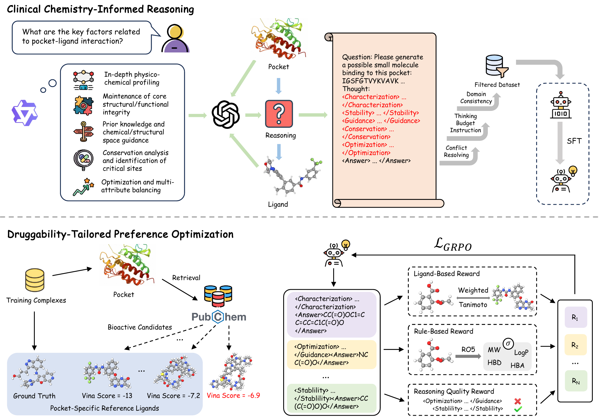
Interpretable Drug Discovery via Structured Reasoning and Druggability-Tailored Preference Optimization
ICLR 2026
I am currently a researcher at Anew Labs. Before that, I received my Ph.D. from the Department of Computer Science and Technology at Tsinghua University, where I was advised by Prof. Yang Liu. I was also affiliated with THUNLP and AIR, Tsinghua University. In addition, I have been fortunate to work closely with Prof. Wenbing Huang at Gaoling School of Artificial Intelligence, Renmin University of China. During my Ph.D., I was also fortunate to spend research internships at Microsoft Research Cambridge, Alibaba DAMO Academy, and Alibaba Tongyi Lab.
My research interests lie in generative models and agentic systems for scientific discovery, with a focus on materials and biomolecules. More broadly, I believe that stronger scientific systems will emerge from the interplay between systematic agent frameworks and reliable, user-friendly scientific tools tailored to specific domains. Along this line, I work on geometric and generative AI methods for molecular representation learning, material/biomolecular design, and scientific discovery workflows. I am always happy to discuss research ideas and potential academic collaborations.
I received my Ph.D. degree from the Department of Computer Science and Technology, Tsinghua University, and was honored as a Tsinghua Outstanding Graduate with an Outstanding Doctoral Dissertation Award.
One paper was accepted to KDD 2026.
Our work on Elements was released as a preprint, where we use a general foundation model as a tool and combine it with an agent workflow to discover four low-temperature superconducting materials.
Our paper, "Siamese Foundation Models for Crystal Structure Prediction", was published in Nature Communications.
We released AnewOmni, a programmable all-atom generative framework that unifies peptide, antibody, and small-molecule binder design with graph-prompt-based control, with multiple designs experimentally validated in wet-lab assays.
Our paper, "An Equivariant Pretrained Transformer for Unified 3D Molecular Representation Learning", was published in Nature Communications.
One paper was accepted to ICLR 2026.
Our paper, "Peptide Design through Binding Interface Mimicry with PepMimic", was published in Nature Biomedical Engineering.
Two papers were accepted to NeurIPS 2025.
Our paper, "Powder Diffraction Crystal Structure Determination Using Generative Models", was published in Nature Communications.
Two papers were accepted to ICML 2025.
Our survey paper, "A Survey of Geometric Graph Neural Networks: Data Structures, Models and Applications", was published in Frontiers of Computer Science.
One paper was accepted to ICLR 2025.
Two papers were accepted to NeurIPS 2024.
One paper was accepted to ICML 2024.
One paper was accepted to ICLR 2024.
One paper was accepted to NeurIPS 2023.
One paper was accepted to AAAI 2023.
I received my B.E. degree from the Department of Computer Science and Technology, Tsinghua University, and was honored as a Beijing Outstanding Graduate.
One paper was accepted to KDD 2021.
One paper was accepted to Findings of ACL-IJCNLP 2021.

ICLR 2026
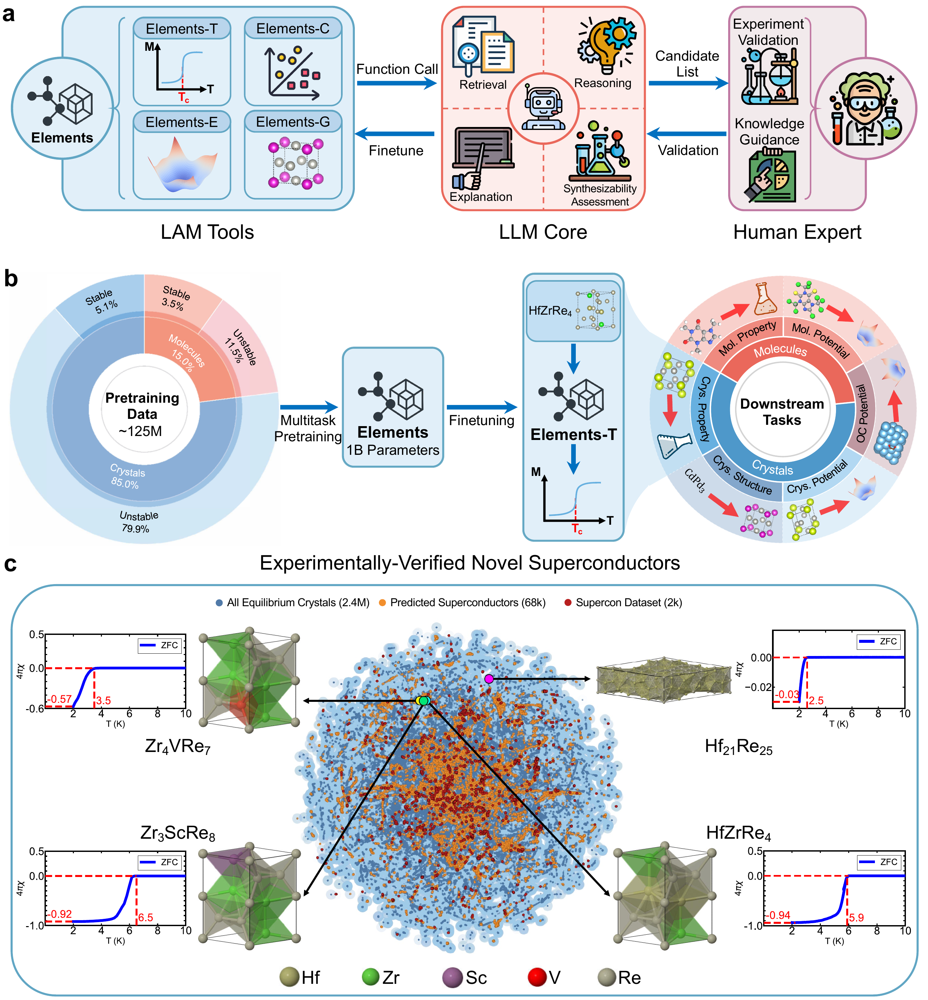
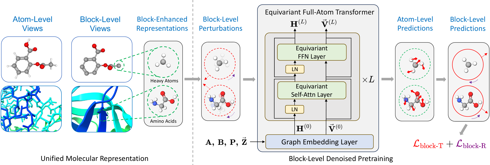
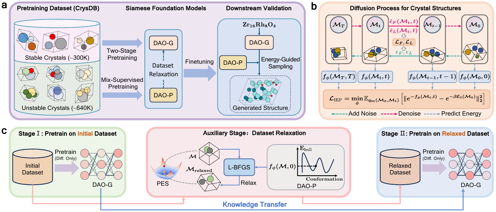
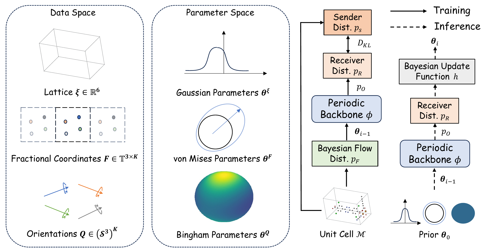
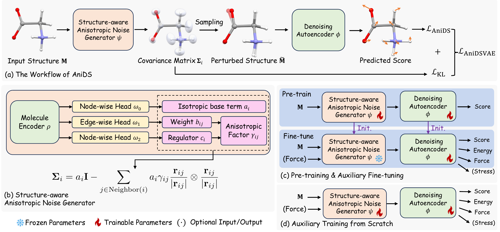
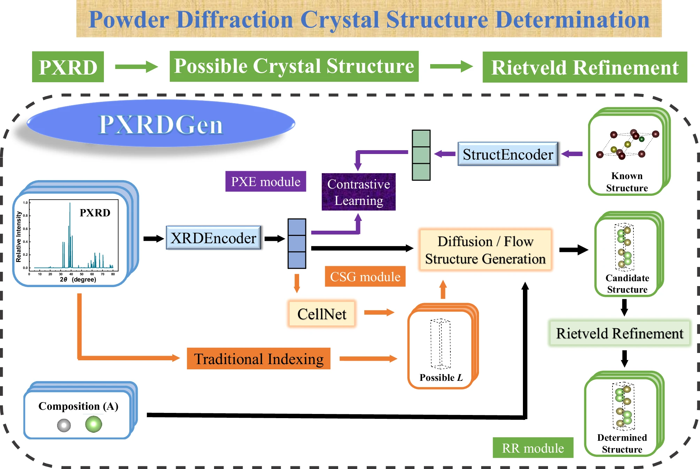
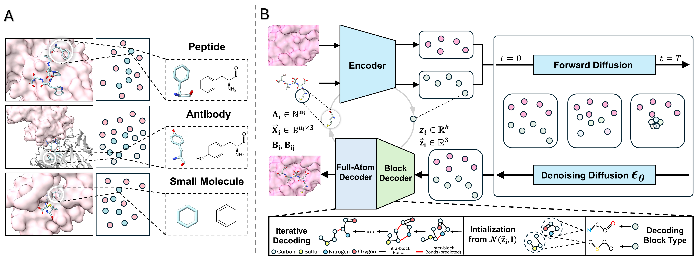
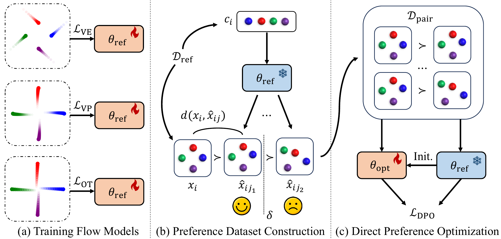
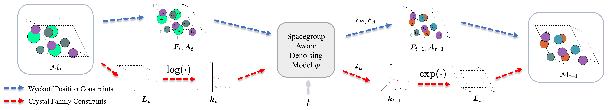
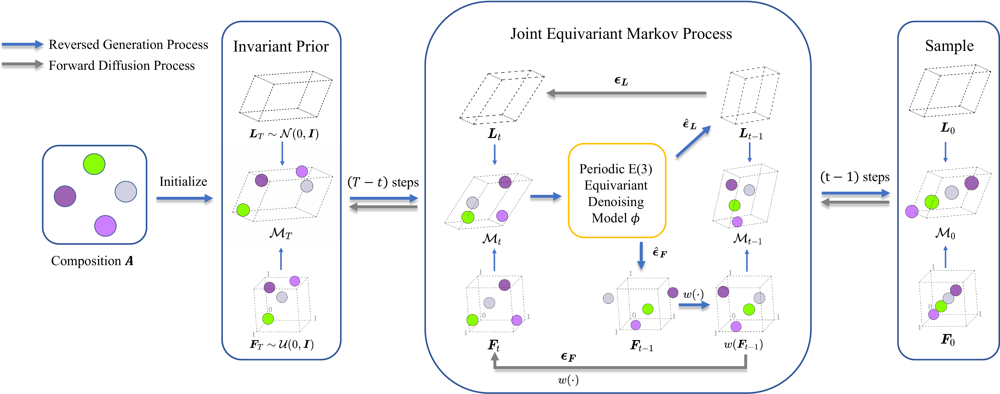
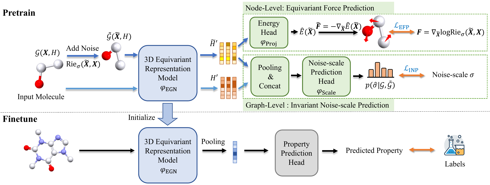
Outside research, I enjoy board games and spending time with cats. If you are nearby, feel free to find me offline for a board game or a casual chat :)